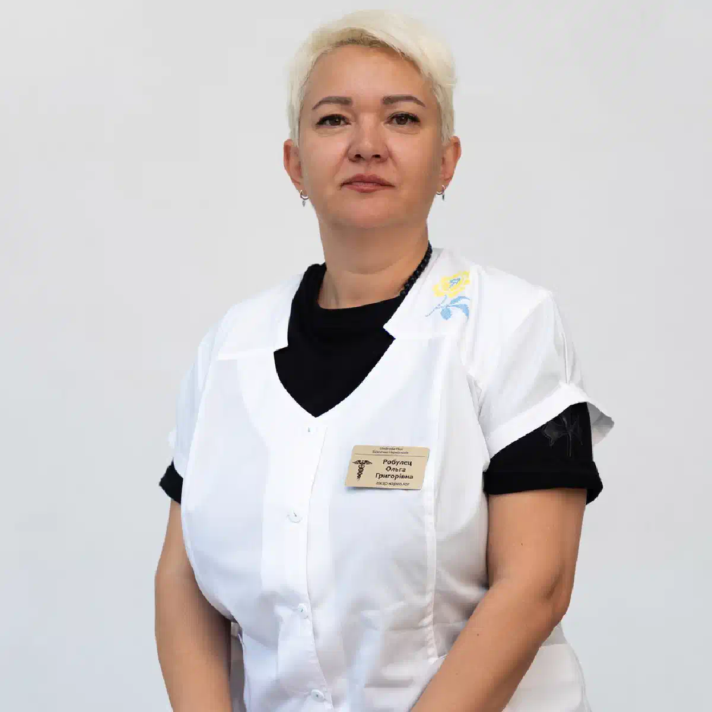

+38(068)
79 72 782
+38(068)
79 72 782Лечение наркотической зависимости у военных в Харькове
Конфиденциальная помощь и индивидуальный подход


Бесплатная консультация, работаем круглосуточно 24/7
Конфиденциальная помощь и индивидуальный подход

Дата написания: 4 окт. 2026 г.
Последнее обновление: 4 окт. 2026 г.
Лечение наркотической зависимости у военнослужащих требует комплексного подхода с учётом физического здоровья, психологического состояния и последствий боевого опыта. При обращении за помощью важно учитывать перенесённые ранения, хроническую боль, нарушения сна, уровень тревоги и принимаемые лекарственные препараты. Лечение наркотической зависимости у военных в Харькове направлено не только на прекращение употребления психоактивных веществ, но и на восстановление повседневного функционирования, снижение риска повторного употребления и формирование устойчивой мотивации к трезвости.
Обратиться за медицинской помощью стоит уже тогда, когда употребление вещества становится трудно контролировать, человек неоднократно пытается отказаться от него, но возвращается к употреблению, повышает дозировки или продолжает принимать препараты несмотря на ухудшение физического и психологического состояния. Дополнительными признаками могут быть изменение схемы приёма обезболивающих без согласования с врачом, употребление ради состояния опьянения или появление выраженной тяги. Ранняя консультация нарколога по наркотической зависимости позволяет оценить степень проблемы и определить дальнейшую тактику, не дожидаясь тяжёлой интоксикации или передозировки.
На возможное формирование зависимости могут указывать сильное влечение к веществу, постепенная потеря контроля над дозировкой и частотой употребления, увеличение времени, затрачиваемого на поиск препарата и восстановление после него. Меняются привычки, сон, эмоциональное состояние, отношения с окружающими и отношение к служебным или бытовым обязанностям. Однако отдельные симптомы не являются достаточным основанием для постановки диагноза. Признаки наркотической зависимости необходимо оценивать вместе с историей употребления, характером принимаемых препаратов, физическим состоянием и сопутствующими заболеваниями.
Приём опиоидных обезболивающих по медицинским показаниям сам по себе не означает наличие наркотической зависимости. При длительном лечении может сформироваться физическая зависимость с симптомами отмены, однако она отличается от расстройства, сопровождающегося потерей контроля и навязчивым употреблением. Врач уточняет цель назначения препарата, соблюдение дозировки, наличие тяги, попытки самостоятельного увеличения дозы и использование лекарства не по назначению. При возникновении сомнений необходима консультация нарколога при зависимости от обезболивающих. Резко отменять препараты после длительного применения без медицинского контроля не рекомендуется.
После травматических событий, ранений или длительного пребывания в условиях высокого стресса некоторые люди начинают использовать психоактивные вещества как способ временно уменьшить тревогу, эмоциональное напряжение, воспоминания или нарушения сна. Постепенно эпизодическое употребление может становиться регулярным. При этом наличие боевого опыта само по себе не означает обязательного развития зависимости. Важно определить, какие психологические и физические факторы поддерживают употребление. Помощь при зависимости на фоне боевого стресса должна учитывать как употребление веществ, так и эмоциональные последствия пережитых событий.
Посттравматическое стрессовое расстройство и наркотическая зависимость могут развиваться одновременно и взаимно усиливать проявления друг друга. Человек может использовать вещества для уменьшения тревоги, напряжения, ночных кошмаров или проблем со сном, но со временем такое поведение способно ухудшать состояние. В подобных случаях лечение ПТСР и наркотической зависимости должно включать оценку обоих состояний. Специалисты работают с тягой к веществам, тревогой, нарушениями сна и последствиями психотравмы, а последовательность лечения определяют индивидуально с учётом безопасности пациента и его готовности к терапии.
Разговор желательно начинать в спокойной обстановке, когда человек находится в состоянии, позволяющем нормально воспринимать информацию. Вместо обвинений и давления лучше обсуждать конкретные последствия употребления: изменение поведения, проблемы со здоровьем, увеличение дозировок или повторные эпизоды интоксикации. Первым шагом может стать мотивационная консультация нарколога, во время которой специалист помогает человеку самостоятельно оценить ситуацию и принять решение о лечении. Родственники могут помочь с записью, подготовкой медицинских документов и сопровождением пациента, если он согласен на такую поддержку.
На первичной консультации врач уточняет, какие вещества употребляются, как долго и с какой частотой, когда был последний приём и были ли попытки самостоятельно прекратить употребление. Отдельно собирается информация о ранениях, операциях, хронической боли, нарушениях сна и препаратах, назначенных другими специалистами. Консультация нарколога в Харькове помогает определить необходимость дополнительного обследования, медикаментозной терапии, амбулаторного лечения или госпитализации. Желательно иметь при себе имеющиеся медицинские выписки и перечень регулярно принимаемых лекарств.
Перед началом лечения врач собирает анамнез, оценивает физическое и психическое состояние пациента, измеряет артериальное давление, пульс, частоту дыхания и другие основные показатели. В зависимости от ситуации могут назначаться лабораторные исследования крови, ЭКГ и дополнительные диагностические процедуры. Тест на наркотики в Харькове может использоваться как часть обследования, однако его результат рассматривается вместе с клиническими данными и не определяет тяжесть зависимости самостоятельно. Врач также уточняет наличие эпизодов передозировки, судорог, психотических проявлений и других опасных состояний.
План лечения составляется после оценки употребляемого вещества, продолжительности и частоты употребления, физического состояния, сопутствующих заболеваний и психологических факторов. Лечение наркотической зависимости может включать помощь при абстинентном синдроме, медикаментозную терапию, психотерапию, работу с мотивацией и дальнейшее наблюдение. С пациентом заранее обсуждаются основные цели и последовательность этапов. Если употребление связано с хронической болью после ранения, наркологическая помощь должна сочетаться с адекватным лечением болевого синдрома.
Детоксикация представляет собой медицинскую помощь, направленную на стабилизацию состояния после прекращения употребления или при выраженных последствиях интоксикации. Детоксикация от наркотиков подбирается индивидуально после осмотра и зависит от принятого вещества, симптомов и общего состояния пациента. Инфузионная терапия назначается по медицинским показаниям и требуется не каждому пациенту. Важно понимать, что детоксикация является только одним из этапов помощи и не устраняет психологические и поведенческие механизмы зависимости, поэтому после стабилизации необходимо планировать дальнейшее лечение.
Отдельные этапы помощи могут проводиться на дому, если состояние пациента относительно стабильное, отсутствуют признаки тяжёлой интоксикации и человек способен выполнять рекомендации врача. Лечение наркомании на дому может включать осмотр, консультацию, оценку состояния, отдельные медицинские процедуры и последующее наблюдение. Однако нарушение сознания, угнетение дыхания, судороги, психоз или выраженное возбуждение требуют другого уровня медицинской помощи. Домашний формат также не заменяет полноценную программу длительного лечения наркотической зависимости.
При обращении за выездной помощью необходимо сообщить, какое вещество употреблялось, приблизительную дозу, время последнего приёма и текущие симптомы. Важно обязательно указать употребление алкоголя, снотворных, транквилизаторов и обезболивающих препаратов. Нарколог на дом в Харькове после приезда проводит оценку состояния и определяет возможность дальнейшего лечения в домашних условиях. При выраженном угнетении сознания, нарушении дыхания, судорогах или подозрении на передозировку необходимо сразу вызвать 103 или 112 и не ждать планового приезда специалиста.
Стационар может быть необходим при нестабильном состоянии, выраженных симптомах отмены, тяжёлых сопутствующих заболеваниях или необходимости постоянного медицинского наблюдения. Наркологический стационар в Харькове позволяет контролировать жизненно важные показатели, проводить обследования и корректировать лечение по мере изменения состояния. При потере сознания, судорогах, угнетении дыхания или других острых осложнениях может потребоваться экстренная госпитализация в многопрофильное медицинское учреждение с возможностью проведения интенсивной терапии.
Если человек не просыпается, дышит редко или ненормально, появились судороги, выраженная боль в груди, резкое нарушение сознания или сильный перегрев, необходимо немедленно вызвать 103 или 112. Помощь при передозировке наркотиками нельзя заменять капельницей, кофе, холодным душем или попытками дать человеку самостоятельно «проспаться». Не оставляйте пациента одного и выполняйте рекомендации диспетчера. При подозрении на передозировку опиоидами налоксон может применяться при его наличии согласно инструкции, однако даже после улучшения пациент нуждается в медицинском осмотре.
При зависимости от опиоидных обезболивающих важно одновременно оценивать характер употребления и причину, по которой препарат был назначен изначально. Человек не должен оставаться без адекватной помощи при хронической или посттравматической боли. Лечение зависимости от опиоидов может включать медикаментозную терапию, психологическую поддержку и дальнейшее наблюдение. Выбор метода зависит от характера употребления, физической зависимости, сопутствующих заболеваний и общего состояния. Все изменения схемы обезболивания желательно согласовывать с лечащими специалистами.
При длительном употреблении налбуфина врач оценивает частоту введения препарата, используемые дозировки, симптомы отмены и причины первоначального назначения обезболивающего. Резкое прекращение после формирования физической зависимости может сопровождаться абстинентным синдромом. Лечение зависимости от налбуфина в Харькове начинается с оценки состояния и разработки безопасной тактики дальнейшей терапии. Особое внимание уделяется употреблению налбуфина вместе с алкоголем, снотворными или транквилизаторами, поскольку такие сочетания способны повышать риск угнетения дыхания и других опасных осложнений.
При употреблении амфетамина и других стимуляторов важно оценить состояние сердечно-сосудистой и нервной системы, уровень возбуждения, сон и наличие психотических симптомов. При остром психозе, выраженном возбуждении, значительной тахикардии или других тяжёлых проявлениях может понадобиться неотложная медицинская помощь. После стабилизации лечение зависимости от амфетамина в Харькове включает работу с причинами употребления, тягой, нарушениями сна и профилактикой повторных эпизодов. Медикаментозная терапия назначается врачом с учётом конкретной клинической ситуации.
При одновременном употреблении нескольких веществ врачу необходимо сообщить обо всех принятых препаратах. Алкоголь способен значительно повышать риск опасного угнетения дыхания при сочетании с опиоидами, снотворными и другими седативными средствами. Если одновременно присутствует длительное употребление спиртного или запой, после медицинской оценки может потребоваться вывод из запоя на дому Харьков или стационарная помощь. Скрывать факт сочетания алкоголя и наркотиков опасно, поскольку эта информация непосредственно влияет на выбор лечения, допустимые препараты и необходимый уровень медицинского наблюдения.
Тревожность, внутреннее напряжение и нарушения сна могут возникать как во время употребления психоактивных веществ, так и после их отмены. Они также могут быть связаны с хронической болью, последствиями боевого стресса или отдельным психическим расстройством. Лечение тревоги и бессонницы при зависимости начинается с оценки причин симптомов и используемых препаратов. Самостоятельный приём сильнодействующих снотворных и транквилизаторов может быть опасен. При суицидальных мыслях или невозможности обеспечить безопасность человека требуется немедленная медицинская помощь.
При наличии хронической боли необходимо учитывать её происхождение, перенесённые операции и травмы, влияние боли на сон, движение и эмоциональное состояние. Лечение зависимости при хронической боли требует согласованной работы специалистов, чтобы уменьшение употребления психоактивных препаратов не приводило к отсутствию адекватного обезболивания. В план могут входить пересмотр лекарственной терапии, реабилитационные мероприятия, физиотерапевтические подходы и психологические методы контроля боли. Основная цель — восстановить повседневную активность и одновременно снизить риски, связанные с неконтролируемым употреблением препаратов.
Психотерапия помогает человеку определить ситуации и эмоциональные состояния, которые провоцируют употребление, научиться справляться с тягой и формировать альтернативные способы реагирования на стресс. Психотерапия при наркотической зависимости может сочетаться с медикаментозным лечением и другими видами медицинской помощи. При наличии ПТСР терапевтическая программа дополнительно учитывает последствия психотравмы. Формат, интенсивность и продолжительность психотерапии определяются индивидуально в зависимости от состояния и готовности пациента к работе.
Реабилитация является важным этапом для пациентов с устойчивой зависимостью, повторными эпизодами употребления или частыми срывами. Реабилитация после наркотической зависимости направлена на восстановление социальных и бытовых навыков, отношений с близкими, режима сна, физической активности и способности справляться со стрессом без психоактивных веществ. В программу могут входить индивидуальные и групповые занятия, психологическая поддержка и участие родственников с согласия пациента. Заранее также составляется план действий на случай усиления тяги или повторного употребления.
Информация о состоянии здоровья, обследовании и лечении относится к медицинской тайне и должна защищаться в соответствии с установленными требованиями. Конфиденциальное лечение наркотической зависимости предполагает ограничение доступа посторонних лиц к медицинской информации. При этом законодательством могут быть предусмотрены отдельные случаи передачи сведений, поэтому обещание абсолютной анонимности при любых обстоятельствах будет некорректным. Перед началом лечения пациент может уточнить порядок оформления медицинской документации и предоставления информации третьим лицам.
Плановое лечение обычно проводится после получения информированного согласия пациента. Врач объясняет предполагаемые методы терапии, ожидаемый эффект, возможные риски и альтернативные варианты. Добровольное лечение наркотической зависимости повышает возможность полноценного сотрудничества между пациентом и специалистом. Родственники и близкие могут помогать мотивировать человека обратиться за помощью, однако не могут самостоятельно заменить его согласие. Исключения при неотложных состояниях определяются медицинскими показаниями и действующими правовыми нормами.
Универсального срока лечения не существует. Продолжительность зависит от употребляемого вещества, стажа употребления, выраженности физической и психологической зависимости, состояния здоровья и реакции на терапию. Лечение наркотической зависимости у военных может включать кратковременный этап стабилизации и более длительное наблюдение, психотерапию или реабилитацию. Улучшение физического состояния после детоксикации ещё не означает завершения лечения. Частоту консультаций и продолжительность программы врач пересматривает в зависимости от достигнутых результатов.
Стоимость лечения наркотической зависимости у военных в Харькове начинается от 2499 грн.
Для начала лечения можно обратиться на консультацию и кратко описать ситуацию: какое вещество употребляется, как долго продолжается употребление, когда была последняя доза и какие симптомы наблюдаются сейчас. Желательно подготовить информацию о хронических заболеваниях, перенесённых ранениях и принимаемых лекарствах. Наркологическая помощь в Харькове может начинаться с консультации, выезда врача на дом или определения необходимости стационарного лечения. При нарушении сознания, дыхания, судорогах или других признаках непосредственной угрозы жизни необходимо в первую очередь вызвать 103 или 112.
Телефон для консультации и вызова нарколога на дом в Харькове: +38(050-021-69-57)

Статья проверена экспертом
Богоденко Констянтин
Врач анастезиолог, ординатор
Возможно интересная статья:
Влияние марихуаны на организм человека

Лечение наркотической зависимости начинается с консультации и оценки состояния пациента. Врач уточняет, какие вещества употреблялись, как долго и в каких количествах, когда был последний приём, есть ли симптомы абстиненции, хронические заболевания и предыдущие попытки лечения. При интоксикации или выраженном синдроме отмены первым этапом может стать медицинская детоксикация и стабилизация состояния. После этого составляется дальнейший план лечения зависимости.
В некоторых случаях медицинскую помощь можно оказать на дому, однако это зависит от вида употреблённого вещества, выраженности интоксикации или абстиненции и общего состояния пациента. Перед началом лечения нарколог оценивает сознание, дыхание, давление, пульс и возможные осложнения. При тяжёлом состоянии или высоком риске осложнений требуется лечение в стационаре.
Стационар необходим, если состояние пациента невозможно безопасно контролировать дома. Показаниями могут быть нарушение сознания, угнетение дыхания, судороги, выраженное возбуждение или психоз, тяжёлое обезвоживание, серьёзные сердечно-сосудистые нарушения, сочетанное употребление нескольких веществ или тяжёлые сопутствующие заболевания. Некоторые виды синдрома отмены также требуют медицинского наблюдения и специализированного лечения.
Программа детоксикации подбирается индивидуально и зависит прежде всего от вещества и состояния пациента. Она может включать медицинское наблюдение, коррекцию обезвоживания и электролитных нарушений, симптоматическую терапию и препараты для уменьшения проявлений синдрома отмены. Для некоторых видов зависимости существуют специальные лекарственные методы лечения. Детоксикация помогает пройти острый период, но сама по себе не устраняет наркотическую зависимость.
Продолжительность детоксикации индивидуальна. Она зависит от употребляемого вещества, длительности и частоты употребления, дозировки, сочетания нескольких веществ и состояния организма. У одних пациентов наиболее выраженные симптомы проходят за несколько дней, у других медицинское наблюдение и лечение требуется дольше. Точные сроки можно определить только после оценки состояния пациента.
При некоторых вариантах лёгкого или умеренного синдрома отмены лечение возможно амбулаторно или на дому под наблюдением врача. Однако тяжёлая ломка, выраженное обезвоживание, нарушения сознания, психические расстройства, судороги или серьёзные сопутствующие заболевания требуют стационара. Тактика также существенно зависит от вида наркотического вещества.
Единого срока не существует. Продолжительность ломки зависит от вещества, его дозы, периода употребления и индивидуальных особенностей организма. Острые симптомы могут продолжаться несколько дней и дольше, а нарушения сна, тревожность, снижение настроения и тяга к веществу иногда сохраняются после завершения острого периода. Поэтому после детоксикации важно продолжать лечение зависимости.
Наркотическая зависимость является хроническим, но поддающимся лечению расстройством. При комплексном лечении можно добиться длительной устойчивой ремиссии, прекратить употребление наркотиков и значительно восстановить качество жизни. Для этого обычно недостаточно только снять ломку или провести детоксикацию — требуется дальнейшая работа с зависимостью и профилактика рецидива.
Лечение может включать медицинскую детоксикацию, медикаментозную терапию, психотерапию, мотивационную работу, лечение сопутствующих психических и соматических нарушений, профилактику рецидива и реабилитацию. При опиоидной зависимости существуют доказанные методы длительной медикаментозной терапии, включая препараты на основе метадона или бупренорфина. Конкретная программа определяется индивидуально.
Для планового лечения важно участие самого пациента и его готовность сотрудничать с врачом. Если человек отказывается от помощи, родственники могут получить консультацию специалиста и обсудить способы мотивировать его обратиться за лечением. Если состояние человека представляет непосредственную угрозу жизни — например, при передозировке, нарушении сознания или дыхания — необходима экстренная медицинская помощь.
Не стоит ограничиваться угрозами, конфликтами или попытками силой заставить человека лечиться. Родственники могут обратиться к специалисту без пациента и получить рекомендации по дальнейшим действиям. Мотивационная работа помогает человеку лучше понять последствия употребления и постепенно сформировать готовность к лечению.
Не каждому пациенту требуется одинаковый формат реабилитации, однако после детоксикации дальнейшее лечение крайне важно. Детокс устраняет или уменьшает острые проявления интоксикации и синдрома отмены, но не решает психологические и поведенческие механизмы зависимости. Реабилитация, психотерапия и другие программы поддержки помогают закрепить трезвость и снизить риск повторного употребления.
Да, в ряде случаев нарколога можно вызвать на дом для оценки состояния пациента после употребления наркотиков. Врач определяет выраженность интоксикации или абстинентного синдрома и решает, возможно ли безопасное лечение дома или необходима госпитализация. При потере сознания, выраженном угнетении дыхания, судорогах, тяжёлом возбуждении или подозрении на передозировку следует обращаться за экстренной медицинской помощью.
Анонимно

Помогли при наркотической зависимости
Номер телефона:
+380 (68) 797 27 82
+380 (50) 021 69 57
Адрес наркологического центра вашего города уточняйте по
телефону
Работаем в: Киеве, Одессе, Львове, Харькове, Днепре,
Запорожье, Черкассах, Чугуеве, Черноморске, Каменском
Telegram: t.me/umbrellaplus
График работы: Круглосуточно